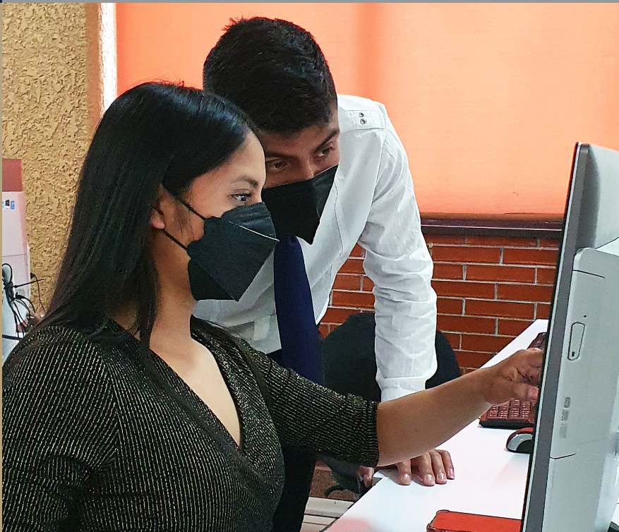

-
Ingeniería Electromecánica
Formar profesionistas de excelencia en ingeniería electromecánica, con actitud emprendedora, con liderazgo y capacidad de: analizar, diagnosticar, diseñar, seleccionar, instalar, administrar, mantener e innovar sistemas electromecánicos, en forma eficiente, segura y económica.
-
Gestión Empresarial
Formar integralmente profesionales que contribuyan a la gestión de empresas e innovación de procesos; así como al diseño, implementación y desarrollo de sistemas estratégicos de negocios, optimizando recursos en un entorno global, con ética y responsabilidad social.

-
Industrial
Formar profesionistas en el campo de la ingeniería industrial, lideres, crea vos y emprendedores con visión sistémica; así como, capacidad analítica y competitiva que le permita diseñar, implementar, mejorar, innovar, optimizar y administrar sistemas de producción de bienes y servicios en un entorno global, con un enfoque sustentable, ético y comprometidos con la sociedad.
-
Industrias Alimentarias
Formar profesionistas con bases sólidas científicas y tecnológicas con actitudes éticas y aptitudes; capaces de administrar, controlar, desarrollar o innovar sistemas de producción en la industria alimentaria, orientados de manera sustentable e integral; considerando la normativa nacional e internacional.
-
Innovación Agrícola Sustentable
Formar profesionistas analíticos y críticos, comprometidos socialmente y con sólida cultura científico tecnológica, que les permita la planeación del desarrollo regional en el contexto de la sustentabilidad, para realizar investigación, validación, transferencia, adaptación, producción e innovación agrícola.
-
Ingeniería en Sistemas Automotrices
Formar profesionales que se desempeñen en el diseño, planificación, desarrollo y pruebas de los sistemas automotrices (sistema de motor, sistema de frenado, sistema de suspensión, etc.), dentro del marco legal y sustentable a través de competencias administrativas, científicas y tecnológicas, con el fin de resolver las necesidades actuales del sector automotriz basados en actitudes éticas, de liderazgo y responsabilidad social.
-
Sistemas Computacionales
Formar profesionistas líderes, con visión estratégica y amplio sentido ético, capaz de diseñar, desarrollar, implementar y administrar tecnología para aportar soluciones innovadoras en beneficio de la sociedad; en un contexto global, multidisciplinario y sostenible.